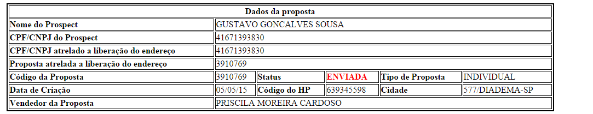

VERIFICAÇÃO DE PROPOSTA A PARTIR DO CPF
IT:430304
VERIFICAÇÃO DE PROPOSTA A PARTIR DO CPF
RESUMO:
Procedimento voltado para instruir o profissional a validar erros se a proposta e CPF informados para liberação de endereço inadimplente são os mesmos utilizados em tentativa de erro da proposta.
Aplicação: Service Desk N1
PROBLEMA:
Validar erros se a proposta e CPF informados para validar erros se a proposta e CPF informados para liberação de endereço inadimplente são os mesmos utilizados em tentativa de envio da proposta.
RESOLUÇÃO:
A partir de 22/03/2015, foram inseridas atualizações no sistema que visam impedir fraudes com relação a liberação de endereço inadimplentes, de forma que para o endereço que for solicitado a liberação, deverá ser informado para qual proposta e qual CPF será liberado e caso no momento do envio a proposta e/ou o CPF for divergente do informado para liberação, a proposta será impedida de ser enviada.

VALIDAÇÃO DO CENARIO:
O procedimento a ser adotado nesta situação é consultar a proposta na ferramenta HPBTOOS, no script localizado no seguinte caminho: Grupo: CRM - > Marcro Processo: CRM / Vender / Venda - > Ação: Analisar Proposta Para Envio:

Após consultar a proposta, verificar os campos CPF/CNPJ atrelado à liberação do endereço e Proposta atrelada à liberação do endereço.
AÇÕES A SEREM TOMADAS:
CASO 1 – PROPOSTA E/OU CPF/CNPJ DIVERGENTES DO UTILIZADO PARA A LIBERAÇÃO DO ENDEREÇO:
Neste caso, onde ou o número da proposta ou o CPF / CNPJ esteja divergente do atrelado a liberação, o chamado deve ser retido no nível 1. A nova regra foi criada justamente para inibir este cenário. Assim sendo, utilizar a seguinte mensagem para fechamento do chamado:
Caso a divergência seja do número da proposta:
“Caro usuário, segundo Regra de Negócios Net, a proposta a ser enviada necessita ser a mesma informada no momento da liberação de endereço inadimplente e o CPF/CNPJ do prospect também necessita ser o mesmo que o informado para a liberação. Neste caso verifica-se que a proposta XXXXXX
Caso a divergência seja do CPF/CNPJ:
“Caro usuário, segundo Regra de Negócios Net, a proposta a ser enviada necessita ser a mesma informada no momento da liberação de endereço inadimplente e o CPF/CNPJ do prospect também necessita ser o mesmo que o informado para a liberação. Neste caso verifica-se que o CPF/CNPJ XXXXXX
CASO 2 – A proposta e o CPF/CNPJ da proposta do chamado é praticamente idêntico, porem o CPF/CNPJ atrelado a liberação do endereço inicia-se com o numeral 0 (zero) e o da proposta não.
Este cenário demonstra uma falha na demanda que implementou essa nova regra. Sempre que o CPF/CNPJ do prospect iniciar com o numeral 0 (zero), ao solicitar a liberação do endereço inadimplente o sistema irá gravar o 0 no início, porem ao preencher a proposta, mesmo que o vendedor inclua o 0 no CPF/CNPJ do prospect em questão, o sistema NetSales irá remover automaticamente o 0 à esquerda, por consequência, no momento do envio, ocorrerá erros.
AÇÃO A SER TOMADA
Neste caso, por tratar-se de um bug, deverá encaminhar um chamado para o N2, na caixa Netsales – Prospect, utilizando a categoria SISTEMAS.NETSALES.PROPOSTA.ERRO DESCONHECIDO IMPEDINDO O CADASTRO DA PROPOSTA, informando na aba propriedades o número da proposta, a cidade da proposta e adicionando como evidencias as telas enviadas pelo usuário, no momento da abertura, com o erro no NetSales e o print do diagnóstico da ferramenta HPBTOOLS.
REFERENCIA:
IT430304 – VERIFICAÇÃO DE PROPOSTA A PARTIR DO CPF
Propriedades do Documento:
ID do doc: 430304
Data de criação: 15/06/2015
Data de Revisão: 05/09/2018